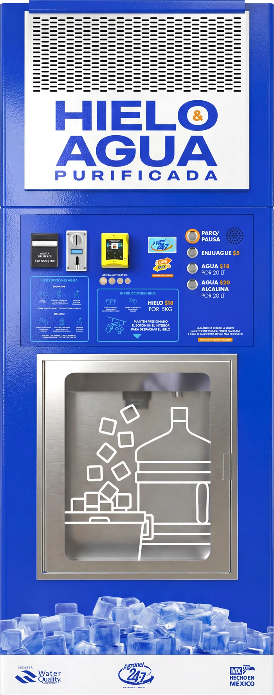
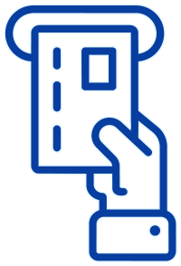
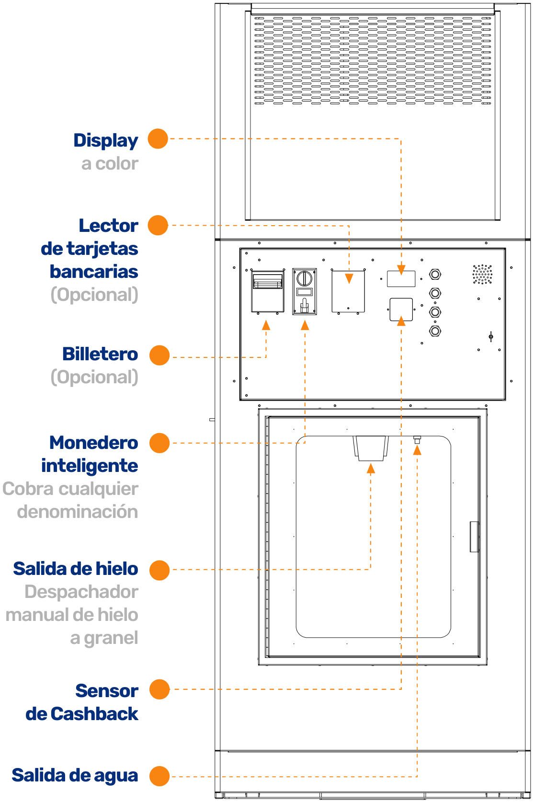
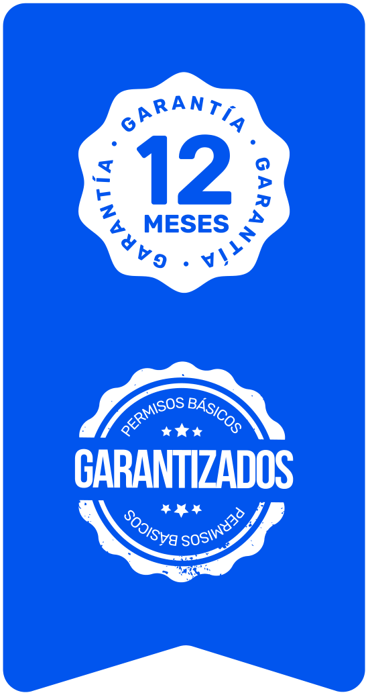

VENTANA DÚO
HIELO Y AGUA
La Ventana Dúo es una solución vending diseñada para negocios que ya cuentan con un sistema de purificación de agua y desean ampliar sus oportunidades comerciales mediante la venta automatizada de agua purificada y hielo a granel.
Al aprovechar la infraestructura existente, puedes incorporar un punto de despacho que permita ofrecer ambos productos las 24 horas del día, incluso fuera del horario habitual de tu establecimiento. Su configuración integra una ventana de despacho de agua y una fabricadora de hielo, permitiéndote diversificar tu oferta sin necesidad de adquirir un sistema de purificación adicional.

Características del equipo
FUNCIONES QUE HACEN ÚNICOS A NUESTROS EQUIPOS AUTOMATIZADOS 24-7
APROVECHA
TU SISTEMA
DE PURIFICACIÓN
FABRICA HASTA
450 KG DE HIELO
EN 24 HORAS
BONIFICA EL SALDO
DE TUS CLIENTES
EN CASHBACK

3 FORMAS DE PAGO
SEGÚN TU TIPO
DE CLIENTE
Equipos desarrollados por ingeniería 100% mexicana

Principales
componentes
Cada componente desempeña una función dentro de la operación general del equipo, desde la purificación del agua hasta el despacho de los productos. La integración de estos elementos permite concentrar diferentes procesos en una misma solución vending, con una configuración diseñada para aplicaciones comerciales.
En el siguiente esquema se identifican los principales componentes que conforman la ventana DÚO.

Ofrece a tus clientes
el nuevo programa de lealtad
- Genera más ventas dando a tus
clientes puntos en cada compra - Regala producto en
activaciones comerciales - Bonifica el cambio
para próximas compras
*TE RECOMENDAMOS ABONAR UN 10% DE CASHBACK EN HIELO Y AGUA.
Inversión segura
y confiable
PRECIO DE LISTA | FABRICADORA 450 KG
$221,000
Precio de meses1:
$271,671
PRECIO DE LISTA | FABRICADORA 220 KG
$204,000
Precio de meses1:
$250,774

Aumenta tus ventasAñade agua alcalina
Por sólo$10,000adicionales
1PRECIO DIFERIDO HASTA EN 12 MESES PAGANDO CON TARJETAS DE CREDITO PARTICIPANTES. PRECIOS INCLUYEN IVA.